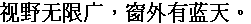

字样资料 / Sunplus SPHE8202L
Sunplus DVD 简体 · 20×24
按原GB2312槽映射7,445字符，其中全部6,763汉字均为非空点阵。对象名CP936不代表完整GBK；部分非汉字符为空，详见方法页。 · 20×24 · 简体
放大观察 · 3×

原尺寸 · 1×
拉丁字符／符号缺字：空格、!、"、#、$、%、&、'、(、)、*、+、,、-、.、/、0、1、2、3、4、5、6、7、8、9、:、;、<、=、>、?、@、A、B、C、D、E、F、G、H、I、J、K、L、M、N、O、P、Q、R、S、T、U、V、W、X、Y、Z、[、\、]、^、_、`、a、b、c、d、e、f、g、h、i、j、k、l、m、n、o、p、q、r、s、t、u、v、w、x、y、z、{、|、}、~。对应位置留空，不借用其他字体补齐。
来源与字样信息
- 家族
- Sunplus SPHE8202L
- 排版说明
- 单行固定中文，完整20×24存储框，字间1px仅为样图排版间隔；不裁白边、不缩放、不平滑。汉字最大墨迹宽/高20×21。实际advance与基线未核。
- 字符框
- 20×24 px
- 字面／墨迹
- 20×21 px
- 字符范围
- 简体
- 样本文字
- 视野无限广，窗外有蓝天。
- 覆盖说明
- 按原GB2312槽映射7,445字符，其中全部6,763汉字均为非空点阵。对象名CP936不代表完整GBK；部分非汉字符为空，详见方法页。
- 缺字
- 拉丁字符／符号缺字：空格、!、"、#、$、%、&、'、(、)、*、+、,、-、.、/、0、1、2、3、4、5、6、7、8、9、:、;、<、=、>、?、@、A、B、C、D、E、F、G、H、I、J、K、L、M、N、O、P、Q、R、S、T、U、V、W、X、Y、Z、[、\、]、^、_、`、a、b、c、d、e、f、g、h、i、j、k、l、m、n、o、p、q、r、s、t、u、v、w、x、y、z、{、|、}、~。对应位置留空，不借用其他字体补齐。
- 样张类型
- 原生20×24简体存储框；所选对象没有独立半角ASCII，不借字。
- 风格
- 未分类
- 用途
- 设备界面
- 字形来源
- 直接读取第三方SPHE8202L源码包内libfont.a的简体CP936未压缩ELF对象，不执行库或固件。原生位图存储已确认；字体最初制作方式、手工逐点设计或轮廓来源尚未独立证实。archive成员的2006-01-09记录不等于字体设计年份。
- 授权状态
- 未确认开放再分发授权
- 许可说明
- 原包声明Sunplus版权所有、保留所有权利，使用须遵守对应许可。第三方公开镜像不是开放授权。仅展示固定样图与无字模工具，不公开完整库、对象文件、BDF或字模数组。
- 说明
- 按原GB2312槽导出，非运行时Unicode近似映射复刻。原转换表在标准GB2312范围内有24处重定向（含11汉字），导出不应用这些别名、不丢原槽字形。A1A4/U+30FB与A1AA/U+2015均由原表支持。所选对象无独立半角ASCII；归档另有西文字体，不推定其配对，不跨库拼配。与227条旧目录样图及可取得常见／已撤字库比较，未见整组重复；查重不证明手绘历史。
- 获取方式
自行取得并确认有权处理匹配SHA的本地libfont.a，使用纯标准库脚本静态提取。默认只生成三款简体固定PNG及报告；--export-bdf另在本地输出标明standard Unicode interpretation的GB2312标准Unicode解释BDF，不复刻运行时别名。无联网、固件执行、字模内嵌或覆盖输出。
- 来源
- SPHE8202L历史源码包中的libfont.a浏览页
- 原生证据
说明：固定归档及对象SHA；按ELF符号边界排除.rodata尾部2字节对齐。每款全部7,614物理槽以两种独立逐位方法核对，7,445标准GB2312字符内存BDF回读一致，固定PNG逐像素核对。
source_sha256：bbf28d191a165c8540f34c66ea6839fa395bcdfd2825e6342f1a4eff7210a5df
objectSha256：26c367d39cf2d0eb39d926337b453ac87400f37b3c58d001efdd518d8da3db2e
payloadSha256：3092173e88303e04a9c29c9f3deb4212557beeba8de63f0ee603f5b4e25103e4
sourceGlyphSlots：7614
gb2312Doublebyte：7445
basicHan：6763
printableAscii：0
runtimeAdvance：
runtimeBaseline：
查看原生设计来源
字体使用与再分发按原来源许可执行。